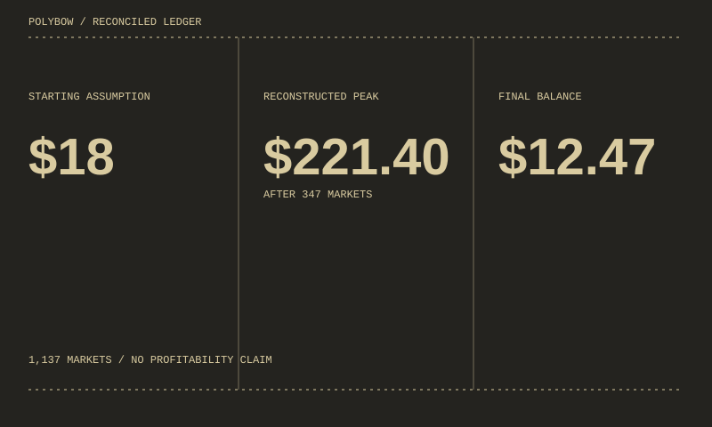
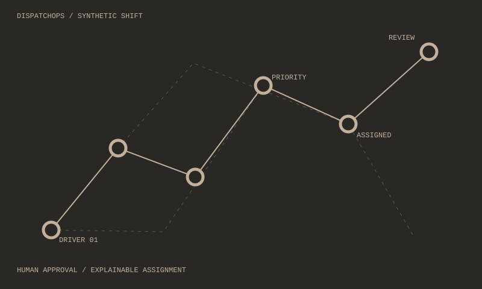
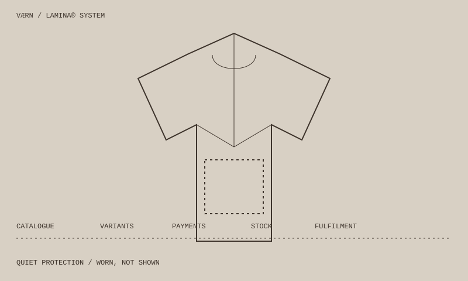
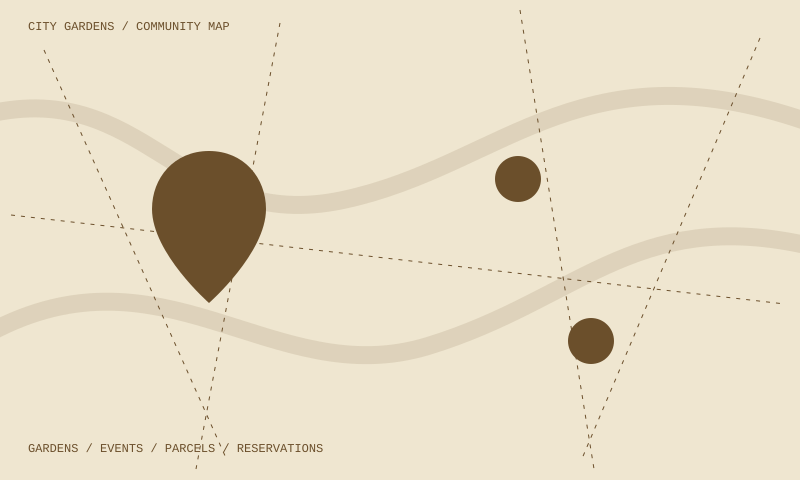
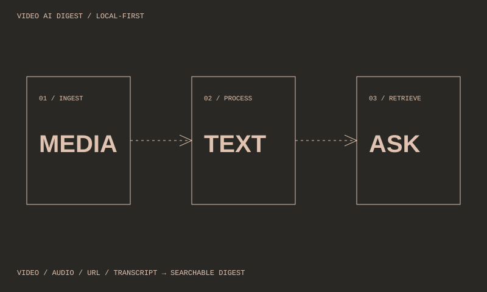
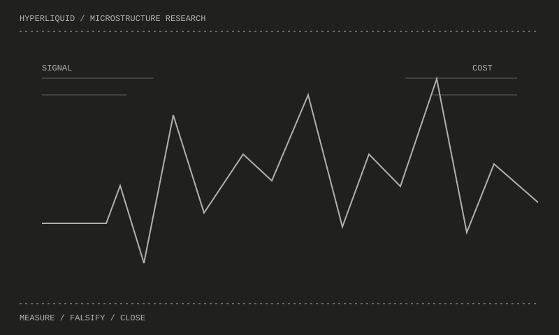

001 / LIVE SYSTEM FORENSICS
Polybow
An anonymized reconstruction of 1,137 live prediction markets: peak, drawdown and the controls that were missing.
JORDI LLUIS · SOFTWARE ENGINEER · DORDRECHT / NETHERLANDS · 2023—2026
RUBY ON RAILS, PYTHON, TYPESCRIPT & SQL | AI PRODUCTS, DATA SYSTEMS AND OPERATIONAL TOOLS
I turn operational experience and difficult data into software people can actually use.
01 / SELECTED WORK
Products, investigations and systems built to test what happens beyond the presentation.

001 / LIVE SYSTEM FORENSICS
An anonymized reconstruction of 1,137 live prediction markets: peak, drawdown and the controls that were missing.

002 / OPERATIONAL INTELLIGENCE
A human-in-the-loop logistics control tower for assignments, capacity, exceptions and reviewable decisions.

003 / COMMERCE SYSTEM
Technical-apparel commerce across catalogue, variants, payments, stock reservation and fulfilment.

004 / TEAM PRODUCT
A collaborative platform connecting local gardens, events, parcels and reservations through a shared map.

005 / APPLIED AI
A local-first workflow turning video, audio, URLs and transcripts into searchable, exportable digests.

006 / MARKET RESEARCH
Short-horizon research that measured signal against execution cost and rejected unsuitable retail strategies.
02 / CONTACT